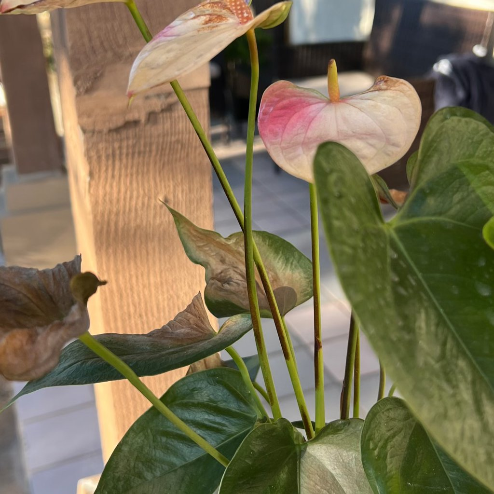

beschadiging door licht of warmte
Wat je ziet
Blad dicht bij lamp, radiator, kachel of halogeen wordt droog, krullerig of krijgt verbrande plekken; soms verkleuring precies onder een spot.
Wat is het?
Schade door lichtbron of warmtebron: fotobleaching én hitte-stress.
Is dit een probleem of natuurlijk?
Probleem, maar eenvoudig voorkomen door afstand en afscherming.
Mogelijke oorzaken
- Grow-light te dichtbij, te lange fotoperiode.
- Halogeen/spotlicht boven plant.
- Radiator/warme vensterbank.
Zo controleer je het
Voel met je hand ter plekke: is het warmer dan lichaamstemperatuur, dan te heet. Meet lampafstand en -uren.
Wat je nu kunt doen
1) Afstand: 30–45 cm tussen lamp en blad; fotoperiode 12–14 u.
2) Verplaatsen: 0,5–1 m weg van radiator; isolerend onderzettertje onder pot op warme vensterbank.
3) Filter: diffuseer spots; kies LED i.p.v. halogeen.
4) Snoei beschadigd blad pas weg als er nieuwe groei is.
Voorkomen
- Plaats thermometer/hygrometer bij plantenhoek.
- Houd lampen verstelbaar en verhoog afstand bij groei.
Afbeeldingen
